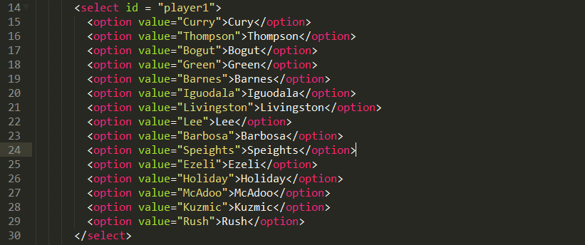
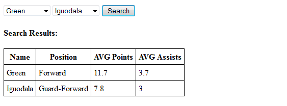

Connect with and use the NBA Stats API
Believe it or not, if you can successfully implement the concepts from the previous pages, you have already done the hardest parts. Working with filters based off of user input isn't that much of a change to any code you have already written. Depending on which types of filter options you want to give a user, you will either be adding a filtering step prior to preparing your URL and/or after making a request to the NBA database. If you are filtering based off of information found in a local object or variable then you will most likely want to filter before preparing your URL. On the other hand, if you are filtering based off of non-local variables or object parameters, you will want to filter after requesting and receiving your data from the NBA database. This option means you need to be careful to only offer filter options that will be returned within the data you have chosen to select, otherwise your filters will not be effective.
I will continue with the example from the previous page using common player info and the previously implemented object with player IDs. My following steps for implementation now look like this:
Since I covered steps 1, 4, 5, and 6 on the previous page, I will only focus on steps 2 and 3 here.
The first step in making a filter is to create the options for user input. For this example I used drop-down menus, but any type of selection is fine. If you are allowing the user to type their own option, be very clear about which type of options are available. Depending on the URL you have chosen for your request, you will get a return that is unique to that request For example, if your request only returns data on players currently active, make sure the user knows not to input a retired player.
After you have provided options for user input, it's time to collect the input. For this, I used a combination of getElementbyID() and the selectedIndex property to access the user's selections. Once you have your filters set, all you need is conditions in the proper place(s). For this request, I iterated through the object with player's and player IDs. If a player matched the filter, then steps 4, 5, and 6 would execute.
And that's all there is to it. Go forth and collect data!
